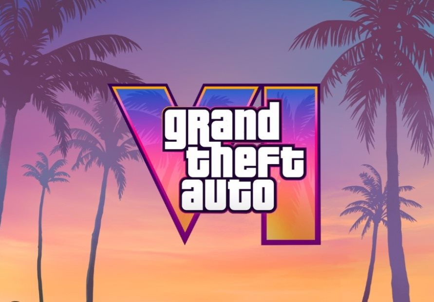

EA SPORTS FC 27
EA SPORTS FC 27 reúne el fútbol de clubes y selecciones en una nueva entrega con mejoras en la jugabilidad. Incluye más de 21.000 futbolistas, más de 800 clubes y selecciones, 140 estadios y más de 35 ligas.
Puedes gestionar tu equipo en el modo Carrera o formar tu plantilla en Ultimate Team. Además, The Grounds ofrece un espacio social de fútbol con partidos de uno contra uno y actividades para jugar con amigos en las plataformas compatibles.
El modo Carrera incorpora cambios en los fichajes y las negociaciones. En el campo, se han mejorado los movimientos de ataque, la defensa y los saques de esquina.
Lanzamiento: 25 de septiembre de 2026.
Estado: Ya disponible.
Precio en GAME: 79,99 € para PS5.
Compañía: Electronic Arts.

Grand Theft Auto VI
GTA VI regresa a Vice City y amplía su escenario al estado de Leonida. Esta nueva aventura de Rockstar Games presenta un mundo abierto con ambientes urbanos, zonas costeras y paisajes naturales.
La historia sigue a Jason y Lucía, dos protagonistas que terminan involucrados en una conspiración criminal después de que un golpe salga mal. Para sobrevivir, tendrán que confiar el uno en el otro mientras afrontan los peligros que les esperan en Leonida.
La edición estándar incluye el juego base. También existe una edición Ultimate con contenido adicional, por lo que puedes elegir la versión que prefieras antes del lanzamiento.
Lanzamiento previsto: 19 de noviembre de 2026.
Estado: Disponible para reservar.
Precio en PlayStation Store: 79,99 € para PS5.
Edición Ultimate para PS5: 99,99 €.
Compañía: Rockstar Games.